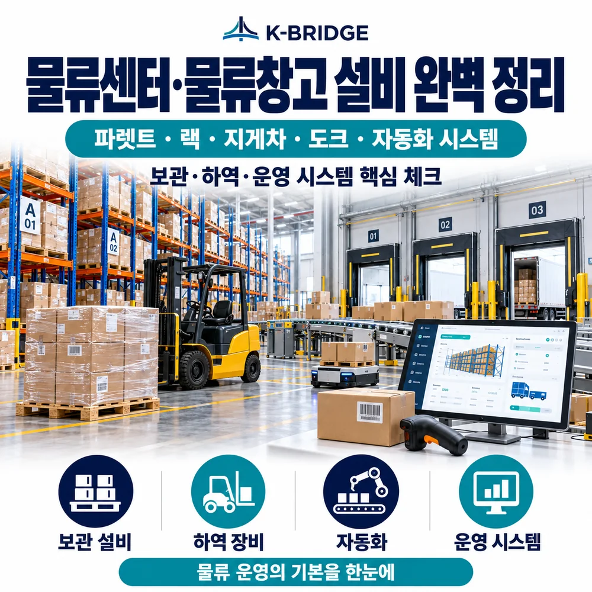
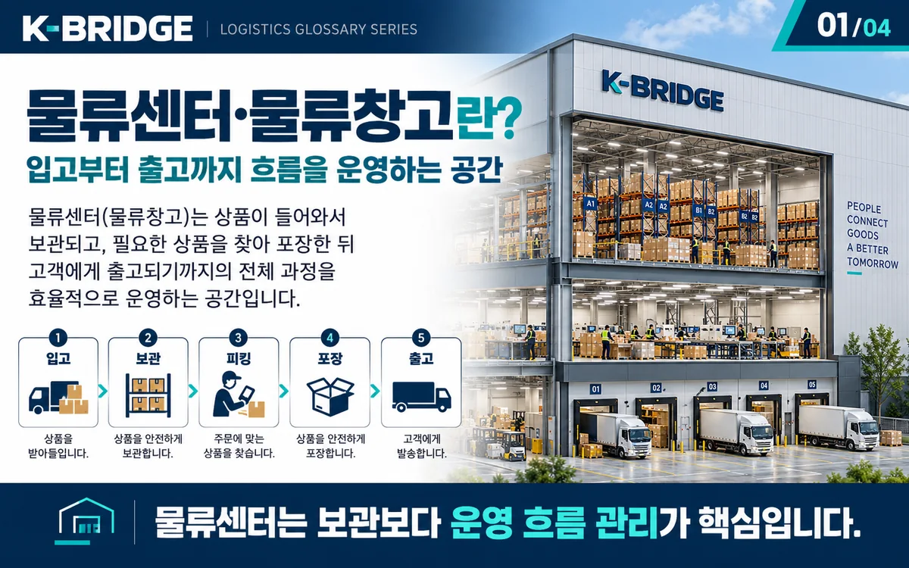
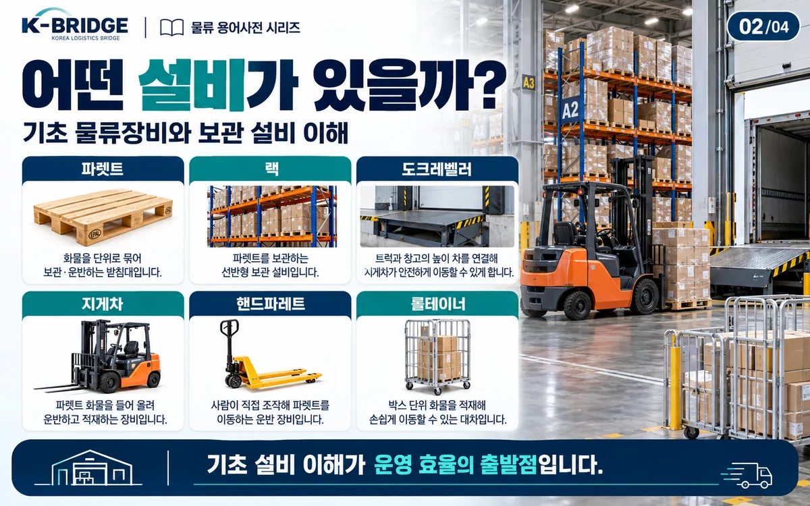
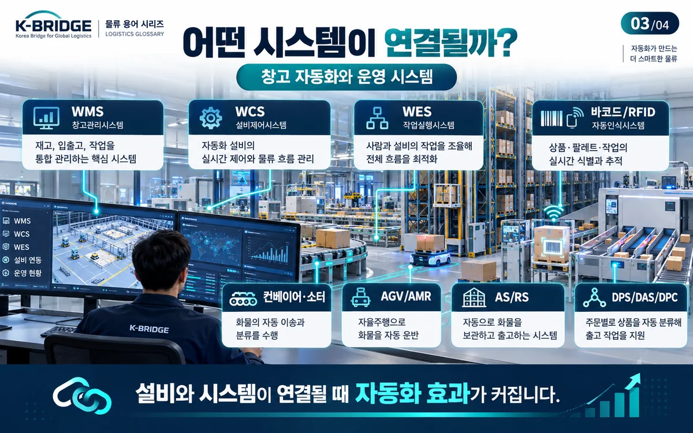
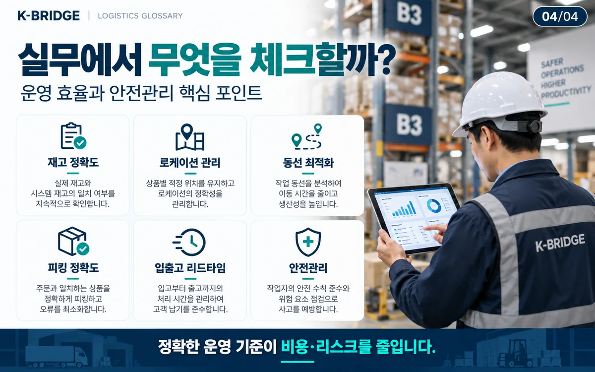

핵심 요약
물류센터 설비·장비는 크게 보관, 이송, 상·하역, 피킹·포장, 자동화 영역으로 나눠 이해하면 쉽습니다. 파렛트와 랙은 보관의 기본, 컨베이어와 도크는 화물 흐름의 연결, 지게차와 리프트는 현장 이동·하역, AGV·AMR·AS/RS는 반복 작업 자동화에 사용됩니다. 중요한 것은 장비의 숫자가 아니라 화물 특성·SKU 수·처리량·동선·안전·시스템 연동에 맞는 조합을 만드는 것입니다.

1. 물류센터 설비·장비란?
물류센터 설비·장비는 화물을 입고하고, 보관하고, 이동시키고, 피킹·포장한 뒤 출고하는 전 과정을 지원하는 구조물·기계·자동화 시스템을 뜻합니다.
실무에서는 표현이 서로 겹치기도 하지만, 이해를 쉽게 하려면 설비는 창고에 설치되어 작업환경과 흐름을 만드는 시스템, 장비는 화물을 직접 취급하거나 이동시키는 기기로 구분하면 됩니다. 예를 들어 랙·컨베이어·도크는 설비에 가깝고 지게차·리프트·롤테이너는 장비에 가깝습니다.

2. 파렛트(Pallet)와 랙(Rack): 보관 설비의 기본
파렛트(Pallet)
파렛트는 여러 개의 화물을 하나의 단위(Unit Load)로 묶어 지게차·파렛트트럭·자동화 설비가 효율적으로 취급할 수 있게 하는 받침대입니다. 목재, 플라스틱, 종이, 스틸 등 재질에 따라 중량, 내구성, 위생, 회수 방식이 달라집니다.
국제 물류에서는 파렛트 치수와 포크 진입부가 운송·하역장비와 맞아야 합니다. ISO 6780은 국제 물류용 평파렛트의 주요 치수와 공차를 다루며 2026년에도 현행 표준으로 확인됩니다. 실제 선적에서는 도착국 규정과 선사·창고의 허용규격을 함께 확인해야 합니다.
랙(Rack)의 주요 종류
| 구분 | 특징 | 적합한 화물·운영 |
|---|---|---|
| 파렛트 랙 | 파렛트 단위로 직접 접근하기 쉬운 범용 랙 | SKU가 많고 입출고가 잦은 일반 물류센터 |
| 적층/메자닌 | 높은 천장 공간을 다층 작업·보관공간으로 활용 | 소형 상품·피킹 작업이 많은 센터 |
| 모빌 랙 | 랙을 이동시켜 필요한 통로만 열어 보관밀도를 높임 | 통로 면적을 줄이고 싶은 고밀도 보관 |
| 드라이브 인 랙 | 지게차가 랙 내부로 진입해 깊이 방향으로 적재 | 소품종·대량 파렛트 보관 |
| 캔틸레버(암) 랙 | 전면 기둥이 적고 돌출 암으로 장척물을 지지 | 강관·형강·목재·판재 등 장척 화물 |
3. 컨베이어·도크·소터: 화물 흐름을 만드는 이송 설비
이송 설비의 목적은 작업자와 지게차의 불필요한 이동을 줄이고, 입고에서 출고까지 화물이 끊기지 않게 연결하는 것입니다.
컨베이어(Conveyor)
박스·토트·파렛트 등을 일정한 경로로 연속 이송합니다. 롤러, 벨트, 체인, 무동력 방식 등 화물 크기·바닥면·중량에 따라 형태가 달라집니다.
도크(Dock)·도크레벨러
창고 바닥과 트럭 적재함의 높이 차이를 연결해 지게차·파렛트트럭이 안전하게 상·하차하도록 돕습니다. 도크보드·레벨러는 최대 하중과 차량 고정, 낙하 위험까지 함께 검토해야 합니다.
자동분류기(Sorter)
바코드·라벨·센서 정보를 읽어 목적지·주문·노선별로 화물을 자동 분류합니다. 택배·이커머스처럼 다품종 다량 출고에서 처리량을 크게 좌우합니다.
파렛타이저·제함기
파렛타이저는 박스·포대를 파렛트에 반복 적재하고, 제함기는 접힌 박스를 성형·하부 테이핑해 포장라인을 자동화합니다.
그 밖에도 층간 화물 이동에는 화물승강기와 리프트가 사용됩니다. 설비 선정 시에는 순간 처리속도만 보지 말고 전·후 공정의 처리량 균형을 함께 봐야 병목을 줄일 수 있습니다.
4. 지게차·리프트·롤테이너: 현장에서 직접 움직이는 장비
지게차(Forklift)는 파렛트 화물의 이동·적재·하역에 가장 널리 쓰이는 장비입니다. 카운터밸런스, 리치, 전동 파렛트트럭 등 작업공간과 적재높이에 따라 장비가 달라집니다.
- 지게차: 파렛트 화물 상·하차, 랙 적치, 구내운반에 사용합니다. 정격하중과 무게중심, 통로폭을 반드시 확인합니다.
- 테이블 리프트: 작업대나 화물의 높이를 맞춰 반복적인 상·하차 작업 부담을 줄입니다.
- 드럼 리프트: 드럼을 들어 올리고 이동·투입하는 전용 취급 장비입니다.
- 롤테이너: 바퀴가 달린 케이지형 운반기구로 낱개·박스 상품의 점포 배송, 피킹, 임시보관에 유용합니다.
5. AGV·AMR·AS/RS: 물류센터 자동화 설비
AGV와 AMR은 모두 무인 이동을 위한 로봇이지만 경로를 처리하는 방식이 다릅니다. AGV는 마커·QR·자기테이프·레일 등 정해진 경로를 따라 반복 이동하는 방식이 일반적이고, AMR은 지도와 센서 정보를 이용해 주변 상황을 인식하면서 경로를 계산하고 장애물을 회피합니다.
| 구분 | 지게차 | AGV | AMR |
|---|---|---|---|
| 운전 방식 | 작업자 운전 | 자동 주행 | 자율 주행 |
| 경로 | 현장 상황에 따라 자유 | 정해진 경로 중심 | 맵 기반 경로 재계산 |
| 강점 | 예외 작업과 다양한 하역 | 고정 반복운송 | 동선 변화가 있는 환경 |
| 핵심 검토 | 운전자·보행자 안전 | 경로 인프라와 교차통제 | 센서·지도·Fleet 관제 연동 |
AS/RS와 Goods-to-Person
AS/RS(자동창고)는 랙·크레인·셔틀·리프트 등을 이용해 보관과 출고를 자동화하는 시스템입니다. Goods-to-Person 방식은 작업자가 상품을 찾으러 이동하는 대신 로봇·셔틀이 상품 또는 토트를 작업자에게 가져와 피킹 이동거리를 줄이는 개념입니다.

6. DPS·DAS·DPC와 WMS/WCS/WES는 어떻게 연결될까?
현장 자동화는 기계만으로 끝나지 않습니다. 작업자에게 무엇을 몇 개 처리할지 알려주는 피킹·분배 시스템과 창고 운영시스템이 연결되어야 합니다.
여기에 WMS는 재고와 작업을 관리하고, WCS는 컨베이어·소터·AS/RS 같은 설비 제어, WES는 작업 우선순위와 사람·로봇·설비의 실행을 조율하는 역할로 사용됩니다. 실제 제품별 기능범위는 겹칠 수 있으므로 이름보다 인터페이스와 책임범위를 확인하는 것이 중요합니다.
7. 2026년 물류센터 자동화에서 달라진 점
2026년에는 한 종류의 자동화 장비를 도입하는 것보다 AS/RS, 컨베이어, 로봇, WMS와 실시간 데이터를 연결해 운영 전체를 최적화하는 방향이 더 중요해지고 있습니다. MHI의 2026 자료도 AS/RS, 컨베이어, 로보틱스, 랙 등 여러 기술을 현대 물류센터의 통합 요소로 다루고 있습니다.
정확한 마스터 데이터가 자동화의 전제
입고 시 SKU의 실측 크기·중량·수량 정보가 틀리면 보관위치 배정, 자동 피킹, 포장, 출고까지 연쇄적으로 오류가 발생할 수 있습니다. 자동 입고 측정과 데이터 품질 관리의 중요성이 커지고 있습니다.
단계적 자동화
공정이 정리되지 않은 상태에서 자동화를 먼저 도입하면 비효율을 그대로 자동화할 수 있습니다. 입고·보관·피킹·출고 중 병목이 큰 구간부터 단계적으로 개선하는 접근이 유리합니다.
AI·예측 유지보수·동적 운영
AI는 설비 이상 감지, 작업 우선순위, 로봇 운영, 수요·재고 데이터 분석 등에서 활용 범위가 확대되고 있습니다. 다만 정확한 데이터와 안전한 의사결정 규칙이 전제입니다.

8. 물류센터 설비·장비 선정 체크리스트
- 화물 특성: 박스·파렛트·드럼·장척물인지, 최대 크기와 중량은 얼마인지 확인합니다.
- SKU와 회전율: 다품종 소량인지 소품종 대량인지에 따라 랙과 피킹 방식이 달라집니다.
- 처리량: 평균 물량뿐 아니라 프로모션·성수기 피크 시간당 처리량을 기준으로 설계합니다.
- 동선: 입고→보관→피킹→검수→포장→출고 흐름이 교차하거나 되돌아가지 않는지 확인합니다.
- 보관밀도 vs 접근성: 공간을 많이 채우는 것과 각 SKU에 빠르게 접근하는 것은 서로 상충할 수 있습니다.
- 시스템 연동: WMS·WCS·WES·ERP와 장비의 인터페이스, 데이터 책임범위를 사전에 정의합니다.
- 안전: 지게차·AMR·보행자·도크 동선을 분리하고 정격하중, 방호장치, 비상정지와 점검기준을 확인합니다.
- 유지보수: 고장 시 우회 프로세스, 예비부품, 공급사 SLA와 확장 가능성까지 검토합니다.
KEY TAKEAWAYS
이 글에서 기억할 것
- 보관: Pallet · Rack · Mezzanine
- 이송: Conveyor · Sorter · Dock
- 하역: Forklift · Lift · Rolltainer
- 자동화: AGV · AMR · AS/RS · GTP
9. 자주 묻는 질문
Q. 파렛트 랙과 드라이브 인 랙의 가장 큰 차이는 무엇인가요?
파렛트 랙은 각 파렛트에 직접 접근하기 쉬워 SKU가 많고 회전이 빠른 창고에 유리합니다. 드라이브 인 랙은 지게차가 랙 내부로 진입해 깊이 방향으로 적재하므로 보관밀도는 높지만 개별 파렛트 접근성은 낮아 소품종·대량 보관에 더 적합합니다.
Q. AGV와 AMR 중 무엇이 더 좋은가요?
우열보다 작업환경의 차이로 봐야 합니다. 고정된 반복동선과 높은 예측성이 중요하면 AGV가 적합할 수 있고, 레이아웃이나 작업동선이 자주 바뀌고 장애물을 피해 유연하게 이동해야 한다면 AMR이 유리할 수 있습니다.
Q. 물류센터 자동화는 어느 공정부터 시작하는 것이 좋나요?
가장 많은 시간·인력이 투입되거나 오류가 반복되는 병목 공정부터 검토하는 것이 일반적입니다. 자동화 설비를 먼저 정하기보다 입고·보관·피킹·분류·포장·출고 데이터를 측정한 뒤 투자 대비 효과가 큰 구간을 우선하는 편이 안전합니다.
Q. 컨베이어를 설치하면 지게차가 필요 없어지나요?
대부분 그렇지 않습니다. 컨베이어는 정해진 경로의 반복 이송에 강하지만 파렛트 상·하차, 예외 화물, 랙 적치처럼 자유로운 이동이 필요한 작업은 지게차나 다른 장비가 필요할 수 있습니다. 두 방식을 역할별로 조합하는 경우가 많습니다.
Q. 자동화 설비를 도입할 때 WMS도 반드시 바꿔야 하나요?
반드시 교체해야 하는 것은 아닙니다. 기존 WMS가 재고·작업지시 데이터를 충분히 제공하고 WCS/WES·로봇 관제와 안정적으로 연동할 수 있다면 유지할 수 있습니다. 핵심은 API·인터페이스, 상태코드, 재고 기준정보와 예외처리 책임이 명확한지입니다.
Q. 지게차와 AMR을 같은 공간에서 운영해도 되나요?
혼재 운영 자체보다 안전설계가 핵심입니다. 교차지점, 우선통행, 제한속도, 센서 사각지대, 보행자 통로, 비상정지와 관제 기준을 사전에 설계해야 하며 장비 제조사와 현장 안전규정을 기준으로 위험성 평가를 진행해야 합니다.
NEXT STEP
이 글과 함께 보면 좋은 자료
창고 선택부터 입출고 운송까지 함께 검토하세요
물류센터 설비와 장비는 화물 규격, 보관 방식, 입출고 차량과 연결됩니다. KBRIDGE는 해상·항공·창고·국내운송 조건을 함께 확인해 실제 운영에 맞는 물류 흐름을 검토합니다.